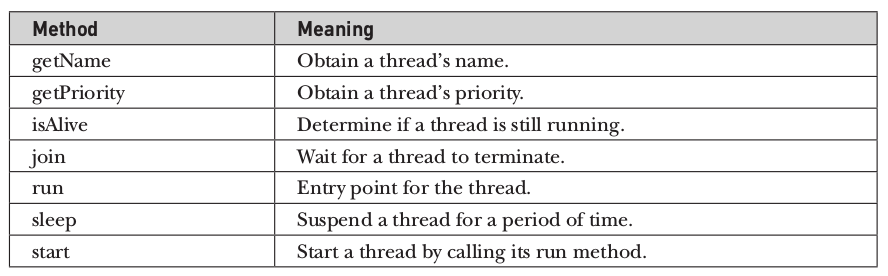

Java Training
Trainer : Abhilash Ramachandran
Email : abhilash.r@outlook.com
Themes
Use any of these built in themes:
Default -
Sky -
Beige -
Simple -
Serif -
Night
Moon -
Simple -
Solarized
Transition Styles
You can select from different transitions, like:
Cube -
Page -
Concave -
Zoom -
Linear -
Fade -
None -
Default
Java History and Overview
- James Gosling
- Patrick Naughton
- Chris Warth
- Ed Frank
- Mike Sheridan
- at Sun Microsystems, Inc. in 1991
- JDK 1.1 = 45
- JDK 1.2 = 46
- JDK 1.3 = 47
- JDK 1.4 = 48
- JDK 1.5 = 49
- JDK 1.6 = 50
Hello World
package language.fundamentals;
public class Literals {
public static void main(String[] args) {
showTypeSizes();
}
public static void showTypeSizes() {
System.out.println("Byte "+Byte.MIN_VALUE +"to "+Byte.MAX_VALUE);
System.out.println("Short "+Short.MIN_VALUE +"to "+Short.MAX_VALUE);
System.out.println("Integer "+Integer.MIN_VALUE +"to "+Integer.MAX_VALUE);
System.out.println("Long "+Long.MIN_VALUE +"to "+Long.MAX_VALUE);
}
}
Output is
Byte -128to 127
Short -32768to 32767
Integer -2147483648to 2147483647
Long -9223372036854775808to 9223372036854775807
package language.fundamentals;
public class Literals {
public static void main(String[] args) {
showTypeSizes();
}
public static void showTypeSizes() {
System.out.println("Byte "+Byte.MIN_VALUE +"to "+Byte.MAX_VALUE);
System.out.println("Short "+Short.MIN_VALUE +"to "+Short.MAX_VALUE);
System.out.println("Integer "+Integer.MIN_VALUE +"to "+Integer.MAX_VALUE);
System.out.println("Long "+Long.MIN_VALUE +"to "+Long.MAX_VALUE);
}
}
Courtesy of highlight.js.
Java Integer Types.
- byte 8 bits
- short 16 bits
- int 32 bits
- long 64 bits
Java Floating-Point Types.
- float 32 bits
- double 64 bits
float f = 1.5f;
double d = 1.5;
Character Types.
- char 16 bits
char ch ='c';
Boolean
- size ? home work
boolean b = true;
Character Types.
- char 16 bits
char ch ='c';
Boolean
- size ? home work
boolean b = true;
Operators
Arithmetic Operators
Arithmetic operators are used in mathematical expressions in the same way that they are used in algebra. The following table lists the arithmetic operators:
// Demonstrate the basic arithmetic operators.
class BasicMath {
public static void main(String args[]) {
// arithmetic using integers
System.out.println("Integer Arithmetic");
int a = 1 + 1;
int b = a * 3;
int c = b / 4;
int d = c - a;
int e = -d;
System.out.println("a = " + a);
System.out.println("b = " + b);
System.out.println("c = " + c);
System.out.println("d = " + d);
System.out.println("e = " + e);
// arithmetic using doubles
System.out.println("\nFloating Point Arithmetic");
double da = 1 + 1;
double db = da * 3;
double dc = db / 4;
double dd = dc - a;
double de = -dd;
System.out.println("da = " + da);
System.out.println("db = " + db);
System.out.println("dc = " + dc);
System.out.println("dd = " + dd);
System.out.println("de = " + de);
}
}
When you run this program, you will see the following output:
Integer Arithmetic
a = 2
b = 6
c = 1
d = -1
e = 1
Floating Point Arithmetic
da = 2.0
db = 6.0
dc = 1.5
dd = -0.5
de = 0.5
The Modulus Operator
The modulus operator, %, returns the remainder of a division operation. Following program demonstrates the %.
class Modulus {
public static void main(String args[]) {
int x = 42;
double y = 42.25;
System.out.println("x mod 10 = " + x % 10);
System.out.println("y mod 10 = " + y % 10);
}
}
When you run this program, you will get the following output:
x mod 10 = 2
y mod 10 = 2.25
Arithmetic Compound Assignment Operators
Java provides special operators that can be used to combine an arithmetic operation with an assignment.
class OpEquals {
public static void main(String args[]) {
int a = 1;
int b = 2;
int c = 3;
a += 5;
b *= 4;
c += a * b;
c %= 6;
System.out.println("a = " + a);
System.out.println("b = " + b);
System.out.println("c = " + c);
}
}
The output of this program is shown here:
a = 6
b = 8
c = 3
Increment and Decrement
The increment operator increases its operand by one. The decrement operator decreases its operand by one.Following program demonstrates this concept
class IncDec {
public static void main(String args[]) {
int a = 1;
int b = 2;
int c;
int d;
c = ++b;
d = a++;
c++;
System.out.println("a = " + a);
System.out.println("b = " + b);
System.out.println("c = " + c);
System.out.println("d = " + d);
}
}
The output of this program follows:
a = 2
b = 3
c = 4
d = 1
The Bitwise Operators
These operators act upon the individual bits of their operands.- ~ Bitwise unary NOT
- & Bitwise AND
- | Bitwise OR
- ^ Bitwise exclusive OR
- >> Shift right
- >>> Shift right zero fill
- << Shift left
- &= Bitwise AND assignment
- |= Bitwise OR assignment
- ^= Bitwise exclusive OR assignment
- >>= Shift right assignment
- >>>= Shift right zero fill assignment
- <<= Shift left assignment
Relational Operators
The relational operators determine the relationship that one operand has to the other.The relational operators are shown here:
- == Equal to
- != Not equal to
- > Greater than
- < Less than
- >= Greater than or equal to
- <= Less than or equal to
Boolean Logical Operators
- & Logical AND
- | Logical OR
- ^ Logical XOR (exclusive OR)
- || Short-circuit OR
- && Short-circuit AND
- ! Logical unary NOT
- &= AND assignment
- |= OR assignment
- ^= XOR assignment
- == Equal to
- != Not equal to
- ?: Ternary if-then-else
class BoolLogic {
public static void main(String args[]) {
boolean a = true;
boolean b = false;
boolean c = a | b;
boolean d = a & b;
boolean e = a ^ b;
boolean f = (!a & b) | (a & !b);
boolean g = !a;
System.out.println(" a = " + a);
System.out.println(" b = " + b);
System.out.println(" a|b = " + c);
System.out.println(" a&b = " + d);
System.out.println(" a^b = " + e);
System.out.println(" !a&b|a&!b = " + f);
System.out.println(" !a= " + g);
}
}
Output of the previous program is as follows:
- a = true
- b = false
- a|b = true
- a&b = false
- a^b = true
- !a&b|a&!b = true
- !a = false
Short-Circuit Logical Operators
|| and && are short circuit logical operators.Java will not bother to evaluate the right- hand operand when the outcome of the expression can be determined by the left operand alone.
//prevents run time exception
if (denom != 0 && num / denom > 10)
The Assignment Operator
var = expression;You can create chain of assignments.
int x, y, z;
x = y = z = 100; // set x, y, and z to 100
The ? Operator
expression1 ? expression2 : expression3If expression1 is true, then expression2 is evaluated; otherwise, expression3 is evaluated
// Demonstrate ?.
class Ternary {
public static void main(String args[]) {
int i, k;
i = 10;
k = i < 0 ? -i : i; // get absolute value of i
System.out.print("Absolute value of ");
System.out.println(i + " is " + k);
i = -10;
k = i < 0 ? -i : i; // get absolute value of i
System.out.print("Absolute value of ");
System.out.println(i + " is " + k);
}
}
*****************
The output generated by the program is shown here:
Absolute value of 10 is 10
Absolute value of -10 is 10
Operator Precedence

Using Parantheses
Parentheses raise the precedence of the operations that are inside them
a >> b + 3
This expression first adds 3 to b and then shifts a right by that result. That is, this
expression can be rewritten using redundant parentheses like this:
a >> (b + 3)
However, if you want to first shift a right by b positions and then add 3 to that result, you
will need to parenthesize the expression like this:
(a >> b) + 3
Control Statements
int a, b;
//single statement after if /else
if(a < b) a = 0;
else b = 0;
//multiple statements after if/else
if (bytesAvailable > 0) {
ProcessData();
bytesAvailable -= n;
}
else{
waitForMoreData();
bytesAvailable = n;
}
Nested ifs
A nested if is an if statement that is the target of another if or else
if(i == 10) {
if(j < 20) a = b;
if(k > 100) c = d; // this if is
else a = c;// associated with this else
}
else a = d;// this else refers to if(i == 10)
Below is an example of if-else-if statement usage.
class IfElse {
public static void main(String args[]) {
int month = 4; // April
String season;
if(month == 12 || month == 1 || month == 2)
season = "Winter";
else if(month == 3 || month == 4 || month == 5)
season = "Spring";
else if(month == 6 || month == 7 || month == 8)
season = "Summer";
else if(month == 9 || month == 10 || month == 11)
season = "Autumn";
else
season = "Bogus Month";
System.out.println("April is in the " + season + ".");
}
}
Here is the output produced by the program:
April is in the Spring.
switch
The switch statement is Java’s multiway branch statement.Below is an example:
// A simple example of the switch.
class SampleSwitch {
public static void main(String args[]) {
for(int i=0; i<6; i++)
switch(i) {
case 0:
System.out.println("i is zero.");
break;
case 1:
System.out.println("i is one.");
break;
case 2:
System.out.println("i is two.");
break;
case 3:
System.out.println("i is three.");
break;
default:
System.out.println("i is greater than 3.");
}
}
}
The output produced by this program is shown here:
i is zero.
i is one.
i is two.
i is three.
is is greater than 3.
is is greater than 3.
The break statement is optional. If you omit the break, execution will continue on into the next case.
// In a switch, break statements are optional.
class MissingBreak {
public static void main(String args[]) {
for(int i=0; i<12; i++)
switch(i) {
case 0:
case 1:
case 2:
case 3:
case 4:
System.out.println("i is less than 5");
break;
case 5:
case 6:
case 7:
case 8:
case 9:
System.out.println("i is less than 10");
break;
default:
System.out.println("i is 10 or more");
}
}
}
This program generates the following output:
i is less than 5
i is less than 5
i is less than 5
i is less than 5
i is less than 5
i is less than 10
i is less than 10
i is less than 10
i is less than 10
i is less than 10
i is 10 or more
i is 10 or more
class StringSwitch {
public static void main(String args[]) {
String str = "two";
switch(str) {
case "one":
System.out.println("one");
break;
case "two":
System.out.println("two");
break;
case "three":
System.out.println("three");
break;
default:
System.out.println("no match");
break;
}
}
}
Output is "two"
Nested switch Statements
You can use a switch as part of the statement sequence of an outer switch
switch(count) {
case 1:
switch(target) { // nested switch
case 0:
System.out.println("target is zero");
break;
case 1: // no conflicts with outer switch
System.out.println("target is one");
break;
}
break;
case 2: // ...
Iteration Statements
while statement
class While {
public static void main(String args[]) {
int n = 10;
while(n > 0) {
System.out.println("tick " + n);
n--;
}
}
}
When you run this program, it will “tick” ten times:
tick 10
tick 9
tick 8
tick 7
tick 6
tick 5
tick 4
tick 3
tick 2
tick 1
*************************************************************
// The target of a loop can be empty.
class NoBody {
public static void main(String args[]) {
int i, j;
i = 100;
j = 200;
// find midpoint between i and j
while(++i < --j); // no body in this loop
System.out.println("Midpoint is " + i);
}
}
This program finds the midpoint between i and j. It generates the following output:
Midpoint is 150
// Demonstrate the do-while loop.
class DoWhile {
public static void main(String args[]) {
int n = 10;
do {
System.out.println("tick " + n);
n--;
} while(n > 0);
}
}
Introduction to Classes
General Form of Class
A class is declared by use of the class keywordAn example of a simple class is below:
class classname {
type instance-variable1;
type instance-variable2;
// ...
type instance-variableN;
type methodname1(parameter-list) {
// body of method
}
type methodname2(parameter-list) {
// body of method
}
// ...
type methodnameN(parameter-list) {
// body of method
}
}
//New datatype is called Box. It acts as a template.
class Box {
double width;
double height;
double depth;
}
//To actually create a Box object, you will use a statement like the following:
Box mybox = new Box(); // create a Box object called mybox
//To assign the width variable of mybox the value 100, you would use the following statement:
mybox.width = 100;
/* A program that uses the Box class.
Call this file BoxDemo.java
*/
class Box {
double width;
double height;
double depth;
}
// This class declares an object of type Box.
class BoxDemo {
public static void main(String args[]) {
Box mybox = new Box();
double vol;
// assign values to mybox's instance variables
mybox.width = 10;
mybox.height = 20;
mybox.depth = 15;
// compute volume of box
vol = mybox.width * mybox.height * mybox.depth;
System.out.println("Volume is " + vol);
}
}
Some important points
- You should call the file that contains this program BoxDemo.java, because the main( ) method is in the class called BoxDemo, not the class called Box
- When you compile the previous code,you will find that two .class files have been created, one for Box and one for BoxDemo
- The Java compiler automatically puts each class into its own .class file
Exception Handling
Exception-Handling Fundamentals
Java exception handling is managed via five keywords:- try
- catch
- throw
- throws
- finally
try {
// block of code to monitor for errors
}
catch (ExceptionType1 exOb) {
// exception handler for ExceptionType1
}
catch (ExceptionType2 exOb) {
// exception handler for ExceptionType2
}
// ...
finally {
// block of code to be executed after try block ends
}
Uncaught Exceptions
class Exc0 {
public static void main(String args[]) {
int d = 0;
int a = 42 / d;
}
}
- The default handler displays a string describing the exception
- Prints a stack trace from the point at which the exception occurred, and terminates the program.
- java.lang.ArithmeticException: / by zero at Exc0.main(Exc0.java:4)
Using try and catch
class Exc2 {
public static void main(String args[]) {
int d, a;
try { // monitor a block of code.
d = 0;
a = 42 / d;
System.out.println("This will not be printed.");
} catch (ArithmeticException e) { // catch divide-by-zero error
System.out.println("Division by zero.");
}
System.out.println("After catch statement.");
}
}
Division by zero.
After catch statement.
import java.util.Random;
class HandleError {
public static void main(String args[]) {
int a=0, b=0, c=0;
Random r = new Random();
for(int i=0; i<32000; i++) {
try {
b = r.nextInt();
c = r.nextInt();
a = 12345 / (b/c);
} catch (ArithmeticException e) {
System.out.println("Division by zero.");
a = 0; // set a to zero and continue
}
System.out.println("a: " + a);
}
}
}
Multiple catch Clauses
In some cases, more than one exception could be raised by a single piece of code.
class MultipleCatches {
public static void main(String args[]) {
try {
int a = args.length;
System.out.println("a = " + a);
int b = 42 / a;
int c[] = { 1 };
c[42] = 99;
} catch(Arit
hmeticException e) {
System.out.println("Divide by 0: " + e);
} catch(ArrayIndexOutOfBoundsException e) {
System.out.println("Array index oob: " + e);
}
System.out.println("After try/catch blocks.");
}
}
*****************************************************
Here is the output generated by running it both ways:
C:\>java MultipleCatches
a = 0
Divide by 0: java.lang.ArithmeticException: / by zero
After try/catch blocks.
C:\>java MultipleCatches TestArg
a = 1
Array index oob: java.lang.ArrayIndexOutOfBoundsException:42
After try/catch blocks.
Nested try Statements
A try statement can be inside the block of another try.
// An example of nested try statements.
class NestTry {
public static void main(String args[]) {
try {
int a = args.length;
/* If no command-line args are present,
the following statement will generate
a divide-by-zero exception. */
int b = 42 / a;
System.out.println("a = " + a);
try { // nested try block
/* If one command-line arg is used,
then a divide-by-zero exception
will be generated by the following code. */
if(a==1) a = a/(a-a); // division by zero
/* If two command-line args are used,
then generate an out-of-bounds exception. */
if(a==2) {
int c[] = { 1 };
c[42] = 99; // generate an out-of-bounds exception
}
} catch(ArrayIndexOutOfBoundsException e) {
System.out.println("Array index out-of-bounds: " + e);
}
} catch(ArithmeticException e) {
System.out.println("Divide by 0: " + e);
}
}
}
****************************************************
Output is as follows for different scenarios
C:\>java NestTry
Divide by 0: java.lang.ArithmeticException: / by zero
C:\>java NestTry One
a = 1
Divide by 0: java.lang.ArithmeticException: / by zero
C:\>java NestTry One Two
a = 2
Array index out-of-bounds:
java.lang.ArrayIndexOutOfBoundsException:42
class MethNestTry {
static void nesttry(int a) {
try { // nested try block
/* If one command-line arg is used,
then a divide-by-zero exception
will be generated by the following code. */
if(a==1) a = a/(a-a); // division by zero
/* If two command-line args are used,
then generate an out-of-bounds exception. */
if(a==2) {
int c[] = { 1 };
c[42] = 99; // generate an out-of-bounds exception
}
} catch(ArrayIndexOutOfBoundsException e) {
System.out.println("Array index out-of-bounds: " + e);
}
}
public static void main(String args[]) {
try {
int a = args.length;
/* If no command-line args are present,
the following statement will generate
a divide-by-zero exception. */
int b = 42 / a;
System.out.println("a = " + a);
nesttry(a);
} catch(ArithmeticException e) {
System.out.println("Divide by 0: " + e);
}
}
}
****************************************************
Output is as follows for different scenarios
C:\>java NestTry
Divide by 0: java.lang.ArithmeticException: / by zero
C:\>java NestTry One
a = 1
Divide by 0: java.lang.ArithmeticException: / by zero
C:\>java NestTry One Two
a = 2
Array index out-of-bounds:
java.lang.ArrayIndexOutOfBoundsException:42
throw
It is possible for your program to throw an exception explicitly, using the throw statement. The general form of throw is shown here:throw ThrowableInstance;
class ThrowDemo {
static void demoproc() {
try {
throw new NullPointerException("demo");
} catch(NullPointerException e) {
System.out.println("Caught inside demoproc.");
throw e; // rethrow the exception
}
}
public static void main(String args[]) {
try {
demoproc();
} catch(NullPointerException e) {
System.out.println("Recaught: " + e);
}
}
}
***********************************************
Here is the resulting output:
Caught inside demoproc.
Recaught: java.lang.NullPointerException: demo
throws
A throws clause lists the types of exceptions that a method might throw.This is necessary for all exceptions, except those of type Error or RuntimeException, or any of their subclasses.
class ThrowsDemo {
static void throwOne() throws IllegalAccessException {
System.out.println("Inside throwOne.");
throw new IllegalAccessException("demo");
}
public static void main(String args[]) {
try {
throwOne();
} catch (IllegalAccessException e) {
System.out.println("Caught " + e);
}
}
}
*************************************************
Here is the output generated by running this example program:
inside throwOne
caught java.lang.IllegalAccessException: demo
finally
- finally creates a block of code that will be executed after a try /catch block has completed and before the code following the try/catch block.
- The finally block will execute whether or not an exception is thrown.
- If an exception is thrown, the finally block will execute even if no catch statement matches the exception.
- The finally clause is optional. However, each try statement requires at least one catch or a finally clause.
// Demonstrate finally.
class FinallyDemo {
// Throw an exception out of the method.
static void procA() {
try {
System.out.println("inside procA");
throw new RuntimeException("demo");
} finally {
System.out.println("procA's finally");
}
}
//****************************************
// Return from within a try block.
static void procB() {
try {
System.out.println("inside procB");
return;
} finally {
System.out.println("procB's finally");
}
}
//****************************************
// Execute a try block normally.
static void procC() {
try {
System.out.println("inside procC");
} finally {
System.out.println("procC's finally");
}
}
public static void main(String args[]) {
try {
procA();
} catch (Exception e) {
System.out.println("Exception caught");
}
procB();
procC();
}
}
//****************************************
Here is the output generated by the preceding program:
inside procA
procA's finally
Exception caught
inside procB
procB's finally
inside procC
procC's finally
Java’s Built-in Exceptions
The most general of these exceptions are subclasses of the standard type RuntimeException.
Java’s Built-in Exceptions

Creating Your Own Exception Subclasses


class MyException extends Exception {
private int detail;
MyException(int a) {
detail = a;
}
public String toString() {
return "MyException[" + detail + "]";
}
}
class ExceptionDemo {
static void compute(int a) throws MyException {
System.out.println("Called compute(" + a + ")");
if(a > 10)
throw new MyException(a);
System.out.println("Normal exit");
}
public static void main(String args[]) {
try {
compute(1);
compute(20);
} catch (MyException e) {
System.out.println("Caught " + e);
}
}
}
//********************************************
Below is the result
Called compute(1)
Normal exit
Called compute(20)
Caught MyException[20]
Chained Exceptions
- The chained exception feature allows you to associate another exception with an exception.
- This second exception describes the cause of the first exception.
- The constructors are shown here: Throwable(Throwable causeExc)
- The chained exception methods supported by Throwable are getCause( ) and initCause( ).
Throwable(String msg, Throwable causeExc)
class ChainExcDemo {
static void demoproc() {
// create an exception
NullPointerException e =
new NullPointerException("top layer");
// add a cause
e.initCause(new ArithmeticException("cause"));
throw e;
}
public static void main(String args[]) {
try {
demoproc();
} catch(NullPointerException e) {
// display top level exception
System.out.println("Caught: " + e);
// display cause exception
System.out.println("Original cause: " +
e.getCause());
}
}
}
//*******************************************
The output from the program is shown here:
Caught: java.lang.NullPointerException: top layer
Original cause: java.lang.ArithmeticException: cause
Three Recently Added Exception Features
- try-with-resources
- multi-catch
- final rethrow or more precise rethrow
class MultiCatch {
public static void main(String args[]) {
int a=10, b=0;
int vals[] = { 1, 2, 3 };
try {
int result = a / b; // generate an ArithmeticException
//
vals[10] = 19; // generate an ArrayIndexOutOfBoundsException
// This catch clause catches both exceptions.
} catch(ArithmeticException | ArrayIndexOutOfBoundsException e) {
System.out.println("Exception caught: " + e);
}
System.out.println("After multi-catch.");
}
}
//***********************************************
The program will generate an ArithmeticException when the division by zero is attempted.
If you comment out the division statement and remove the comment symbol from the next
line, an ArrayIndexOutOfBoundsException is generated. Both exceptions are caught by
the single catch statement.
Multithreaded Programming
- A multithreaded program contains two or more parts that can run concurrently.
- Each part of such a program is called a thread, and each thread defines a separate path of execution.
- There are two distinct types of multitasking:
process-based and
thread-based
The Java Thread Model
- The benefit of Java’s multithreading is that one thread can pause without stopping other parts of your program.
- The idle time created when a thread reads data from a network or waits for user input can be utilized elsewhere.
- When a thread blocks in a Java program, only the single thread that is blocked pauses.
- Thread can be in different states:
- running
- ready to run
- suspended
- resumed
- blocked
Thread Priorities
- Thread priorities are integers that specify the relative priority of one thread to another.
- A thread’s priority is used to decide when to switch from one running thread to the next. This is called a context switch.
- The rules that determine when a context switch takes place are simple
- A thread can voluntarily relinquish control.
- A thread can be preempted by a higher-priority thread.
Synchronization
- You must prevent one thread from writing data while another thread is in the middle of reading it.
- Java implements an elegant interprocess synchronization: the monitor.
- You can think of a monitor as a very small box that can hold only one thread. Once a thread enters a monitor, all other threads must wait until that thread exits the monitor.
- Once a thread is inside a synchronized method, no other thread can call any other synchronized method on the same object
Messaging
- Java provides a clean, low-cost way for two or more threads to talk to each other, via calls to predefined methods that all objects have.
- Java’s messaging system allows a thread to enter a synchronized method on an object, and then wait there until some other thread explicitly notifies it to come out.
The Thread Class and the Runnable Interface
- Java’s multithreading system is built upon the Thread class, its methods, and its companion interface, Runnable.
- To create a new thread, your program will either extend Thread or implement the Runnable interface.
- The Thread class defines several methods that help manage threads: 
The Main Thread
- When a Java program starts up, one thread begins running immediately. This is usually called the main thread of your program
- The main thread is important for two reasons:
- It is the thread from which other “child” threads will be spawned.
- Often, it must be the last thread to finish execution because it performs various shutdown actions.
- Main thread can be controlled through a Thread object. See below reference
- static Thread currentThread()
// Controlling the main Thread.
class CurrentThreadDemo {
public static void main(String args[]) {
Thread t = Thread.currentThread();
System.out.println("Current thread: " + t);
// change the name of the thread
t.setName("My Thread");
System.out.println("After name change: " + t);
try {
for(int n = 5; n > 0; n--) {
System.out.println(n);
Thread.sleep(1000);
}
} catch (InterruptedException e) {
System.out.println("Main thread interrupted");
}
}
}
//***************************************
Here is the output generated by this program:
Current thread: Thread[main,5,main]
After name change: Thread[My Thread,5,main]
5
4
3
2
1
Creating a Thread
You create a thread by instantiating an object of type Thread.It is done in two ways:- You can implement the Runnable interface.
- You can extend the Thread class, itself.
Implementing Runnable
To implement Runnable, a class need only implement a single method called run( ), which is declared like this:public void run()
//Here is an example that creates a new thread and starts it running:
// Create a second thread.
class NewThread implements Runnable {
Thread t;
NewThread() {
// Create a new, second thread
t = new Thread(this, "Demo Thread");
System.out.println("Child thread: " + t);
t.start(); // Start the thread
}
// This is the entry point for the second thread.
public void run() {
try {
for(int i = 5; i > 0; i--) {
System.out.println("Child Thread: " + i);
Thread.sleep(500);
}
} catch (InterruptedException e) {
System.out.println("Child interrupted.");
}
System.out.println("Exiting child thread.");
}
}
class ThreadDemo {
public static void main(String args[ ] ) {
new NewThread(); // create a new thread
try {
for(int i = 5; i > 0; i--) {
System.out.println("Main Thread: " + i);
Thread.sleep(1000);
}
} catch (InterruptedException e) {
System.out.println("Main thread interrupted.");
}
System.out.println("Main thread exiting.");
}
}
//******************************************
Output:
(Your output may vary based upon the specific execution environment.)
Child thread: Thread[Demo Thread,5,main]
Main Thread: 5
Child Thread: 5
Child Thread: 4
Main Thread: 4
Child Thread: 3
Child Thread: 2
Main Thread: 3
Child Thread: 1
Exiting child thread.
Main Thread: 2
Main Thread: 1
Main thread exiting.
Extending Thread
- The second way to create a thread is to create a new class that extends Thread, and then to create an instance of that class.
- The extending class must override the run( ) method
- It must also call start( ) to begin execution of the new thread
// Create a second thread by extending Thread
class NewThread extends Thread {
NewThread() {
// Create a new, second thread
super("Demo Thread");
System.out.println("Child thread: " + this);
start(); // Start the thread
}
// This is the entry point for the second thread.
public void run() {
try {
for(int i = 5; i > 0; i--) {
System.out.println("Child Thread: " + i);
Thread.sleep(500);
}
} catch (InterruptedException e) {
System.out.println("Child interrupted.");
}
System.out.println("Exiting child thread.");
}
}
class ExtendThread {
public static void main(String args[]) {
new NewThread(); // create a new thread
try {
for(int i = 5; i > 0; i--) {
System.out.println("Main Thread: " + i);
Thread.sleep(1000);
}
} catch (InterruptedException e) {
System.out.println("Main thread interrupted.");
}
System.out.println("Main thread exiting.");
}
}
//**********************************************
Output
Child thread: Thread[Demo Thread,5,main]
Main Thread: 5
Child Thread: 5
Child Thread: 4
Main Thread: 4
Child Thread: 3
Child Thread: 2
Main Thread: 3
Child Thread: 1
Exiting child thread.
Main Thread: 2
Main Thread: 1
Main thread exiting.
Creating Multiple Threads
// Create multiple threads.
class NewThread implements Runnable {
String name; // name of thread
Thread t;
NewThread(String threadname) {
name = threadname;
t = new Thread(this, name);
System.out.println("New thread: " + t);
t.start(); // Start the thread
}
// This is the entry point for thread.
public void run() {
try {
for(int i = 5; i > 0; i--) {
System.out.println(name + ": " + i);
Thread.sleep(1000);
}
} catch (InterruptedException e) {
System.out.println(name + "Interrupted");
}
System.out.println(name + " exiting.");
}
}
class MultiThreadDemo {
public static void main(String args[]) {
new NewThread("One"); // start threads
new NewThread("Two");
new NewThread("Three");
try {
// wait for other threads to end
Thread.sleep(10000);
} catch (InterruptedException e) {
System.out.println("Main thread Interrupted");
}
System.out.println("Main thread exiting.");
}
}
//*************************************************
//Sample output from this program is shown here. (Your output may vary based upon the
specific execution environment.)
New thread: Thread[One,5,main]
New thread: Thread[Two,5,main]
New thread: Thread[Three,5,main]
One: 5
Two: 5
Three: 5
One: 4
Two: 4
Three: 4
One: 3
Three: 3
Two: 3
One: 2
Three: 2
Two: 2
One: 1
Three: 1
Two: 1
One exiting.
Two exiting.
Three exiting.
Main thread exiting.
Using isAlive( ) and join( )
- Two ways exist to determine whether a thread has finished
- isAlive()- The isAlive( ) method returns true if the thread upon which it is called is still running. It returns false otherwise.
- join()- This method waits until the thread on which it is called terminates. Its name comes from the concept of the calling thread waiting until the specified thread joins it.
// Using join() to wait for threads to finish.
class NewThread implements Runnable {
String name; // name of thread
Thread t;
NewThread(String threadname) {
name = threadname;
t = new Thread(this, name);
System.out.println("New thread: " + t);
t.start(); // Start the thread
}
// This is the entry point for thread.
public void run() {
try {
for(int i = 5; i > 0; i--) {
System.out.println(name + ": " + i);
Thread.sleep(1000);
}
} catch (InterruptedException e) {
System.out.println(name + " interrupted.");
}
System.out.println(name + " exiting.");
}
}
class DemoJoin {
public static void main(String args[]) {
NewThread ob1 = new NewThread("One");
NewThread ob2 = new NewThread("Two");
NewThread ob3 = new NewThread("Three");
System.out.println("Thread One is alive: "
+ ob1.t.isAlive());
System.out.println("Thread Two is alive: "
+ ob2.t.isAlive());
System.out.println("Thread Three is alive: "
+ ob3.t.isAlive());
// wait for threads to finish
try {
System.out.println("Waiting for threads to finish.");
ob1.t.join();
ob2.t.join();
ob3.t.join();
} catch (InterruptedException e) {
System.out.println("Main thread Interrupted");
}
System.out.println("Thread One is alive: "
+ ob1.t.isAlive());
System.out.println("Thread Two is alive: "
+ ob2.t.isAlive());
System.out.println("Thread Three is alive: "
+ ob3.t.isAlive());
System.out.println("Main thread exiting.");
}
}
//********************************************
Sample output from this program is shown here. (Your output may vary based upon the
specific execution environment.)
New thread: Thread[One,5,main]
New thread: Thread[Two,5,main]
New thread: Thread[Three,5,main]
Thread One is alive: true
Thread Two is alive: true
Thread Three is alive: true
Waiting for threads to finish.
One: 5
Two: 5
Three: 5
One: 4
Two: 4
Three: 4
One: 3
Two: 3
Three: 3
One: 2
Two: 2
Three: 2
One: 1
Two: 1
Three: 1
Two exiting.
Three exiting.
One exiting.
Thread One is alive: false
Thread Two is alive: false
Thread Three is alive: false
Main thread exiting.
Synchronization
Using Synchronized Methods
- All objects have their own implicit monitor associated with them. To enter an object’s monitor, just call a method that has been modified with the synchronized keyword.
- While a thread is inside a synchronized method, all other threads that try to call it (or any other synchronized method) on the same instance have to wait.
- To exit the monitor and relinquish control of the object to the next waiting thread, the owner of the monitor simply returns from the synchronized method.
class Callme {
void call(String msg) {
System.out.print("[" + msg);
try {
Thread.sleep(1000);
} catch (InterruptedException e) {
System.out.println("Interrupted");
}
System.out.println("]");
}
}
class Caller implements Runnable {
String msg;
Callme target;
Thread t;
public Caller(Callme targ, String s) {
target = targ;
msg = s;
t = new Thread(this);
t.start();
}
// synchronize calls to call()
public void run() {
synchronized(target) { // synchronized block
target.call(msg);
}
}
}
class Synch1 {
public static void main(String args[]) {
Callme target = new Callme();
Caller ob1 = new Caller(target, "Hello");
Caller ob2 = new Caller(target, "Synchronized");
Caller ob3 = new Caller(target, "World");
// wait for threads to end
try {
ob1.t.join();
ob2.t.join();
ob3.t.join();
} catch(InterruptedException e) {
System.out.println("Interrupted");
}
}
}
//***************************************
Output is:
[Hello]
[Synchronized]
[World]
Interthread Communication
Java includes an elegant interprocess communication mechanism via- wait() - tells the calling thread to give up the monitor and go to sleep until some other thread enters the same monitor and calls notify( ) or notifyAll( ).
- notify() - wakes up a thread that called wait( ) on the same object.
- notifyAll() - wakes up all the threads that called wait( ) on the same object. One of the threads will be granted access.